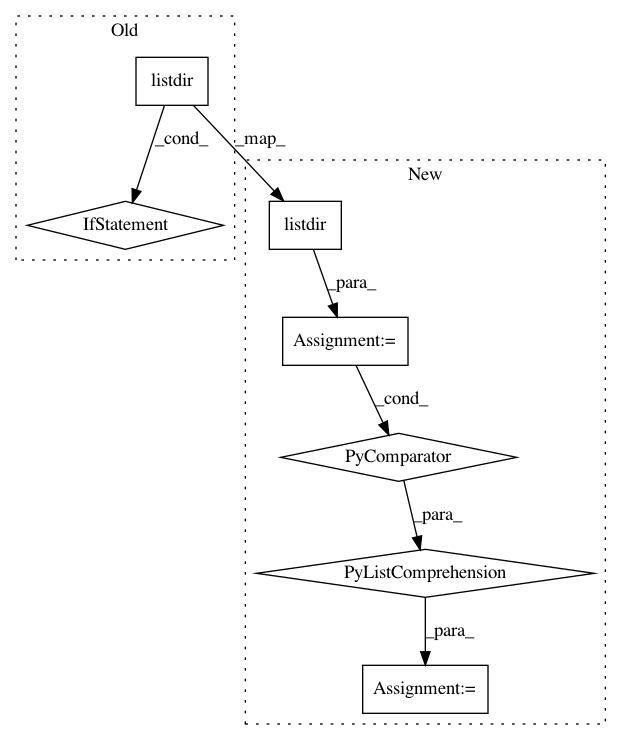

97c34feee4f172bcf6907cfb63f99a52274c34e0,install.py,,,#,20
Before Change
else:
print("Building algorithm images... with (%d) processes" % args.proc)
dockerfiles = []
for fn in os.listdir("install"):
if fn.startswith("Dockerfile."):
dockerfiles.append(fn.split(".")[-1])
if args.proc == 1:
[build(tag, args.build_arg) for tag in dockerfiles]
else:
pool = Pool(processes=args.proc)
After Change
build(os.getenv("LIBRARY"), args.build_arg)
else:
print("Building algorithm images... with (%d) processes" % args.proc)
tags = [fn.split(".")[-1] for fn in os.listdir("install") if fn.startswith("Dockerfile.")]
if args.proc == 1:
[build(tag, args.build_arg) for tag in tags]
else:
In pattern: SUPERPATTERN
Frequency: 4
Non-data size: 7
Instances
Project Name: erikbern/ann-benchmarks
Commit Name: 97c34feee4f172bcf6907cfb63f99a52274c34e0
Time: 2020-07-12
Author: ubuntu@ip-172-31-31-105.ec2.internal
File Name: install.py
Class Name:
Method Name:
Project Name: snipsco/snips-nlu
Commit Name: ab1b67c1e958c9a642f57095f3499a893ba0a5b2
Time: 2017-03-24
Author: adrien.ball@snips.net
File Name: snips_nlu/nlu_engine/nlu_engine.py
Class Name: SnipsNLUEngine
Method Name: load
Project Name: deepfakes/faceswap
Commit Name: 25a2ac95c3b788834db0808307073047747998dd
Time: 2019-10-21
Author: 36920800+torzdf@users.noreply.github.com
File Name: tools/lib_alignments/media.py
Class Name: Faces
Method Name: process_folder
Project Name: idealo/image-super-resolution
Commit Name: 677467e2ae6a25911428540620b5e992cd64f482
Time: 2018-12-20
Author: testadicardi@gmail.com
File Name: src/predict/predict.py
Class Name: Predictor
Method Name: get_predictions